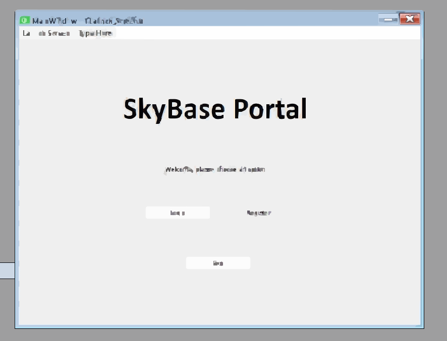

Epidemic Outbreak Detection System
C++ tool that analyzes regional disease data to flag high-risk areas. Uses KD-Trees and Sparse Matrices for fast location search, with an interactive SFML dashboard showing outbreak trends and heatmaps.
A few things I've built during my Computer Science coursework.
C++ tool that analyzes regional disease data to flag high-risk areas. Uses KD-Trees and Sparse Matrices for fast location search, with an interactive SFML dashboard showing outbreak trends and heatmaps.

Relational database system managing flights, aircraft, passengers, bookings, and crew. Normalized SQL schema with keys and constraints, plus optimized queries using joins, views, and indexes.

Shooting game built in Verilog on an FPGA, with scoring logic, timers, and VGA sprite rendering. Integrated sensors, debounce circuits, a seven-segment display, and a finite state machine.